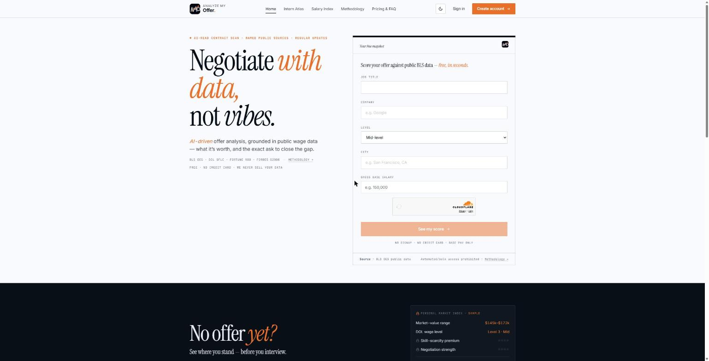

I lead enterprise delivery. I build the AI behind it.
20+ years taking insurance platforms from requirements to production, and now shipping my own AI products end to end. Open to Lead and Architect roles.
20+ yrsleading enterprise deliveryInsurance and finance
Judgment over tooling.
Twenty years modernizing P&C insurance systems, and it was never really about the technology. It is knowing what is actually broken versus what just looks old.
I lead delivery, shape product and still build: teams of 5 to 15 across programs, offshore delivery under Agile and SAFe, deciding what to build and what to leave out, and hands-on architecture across CCM, integration and now LLM pipelines.
About a year ago I started building AI products the same way, on my own. Not tutorials. Things I own end to end.
Selected work
The context, the call I made and what followed.
In development · private · Everest, 2026
Underwriting file validation
Context
Underwriters validate each file by hand, and it takes a large share of their time.
The call
Build agents plus a RAG chatbot that validate the file and answer questions on it.
~60%target cut in manual underwriter time
Everest · 2026
CI/CD pipeline for OpenText code
Context
OpenText code needed a repeatable, controlled path between environments.
The call
Build a CI/CD pipeline for OpenText code movement.
In reviewpipeline under review
Everest · 2026
UT automation framework
Context
About 2,000 forms were moving onto Guidewire PolicyCenter, with a unit-test burden to match.
The call
Build a UT automation framework with AI-assisted document comparison instead of checking by hand.
GL 1.0shipped, now on R1.5

Live product · my own
AnalyzeMyOffer
Context
An offer-letter analysis can fail partway through, and the user loses the work.
The call
Score the offer against named public sources (BLS wage data, DOL visa filings, Fortune 500 and Forbes Global 2000 lists) and run it on Temporal so a failure does not lose the work.
Livewith prompt-injection defenses and PII scrubbing
Redesigning the General Liability product onto Guidewire PolicyCenter, with about 2,000 forms in OpenText Exstream 25.3 Cloud Native on Azure. GL 1.0 shipped and the program is now on R1.5. Leading a team of 5 to 6.
Built a UT automation framework with AI-assisted document comparison.
Built a CI/CD pipeline for OpenText code movement (in review).
Leading an underwriting file-validation deliverable with agents and a RAG chatbot, targeting about 60% less manual underwriter time. Details are private.
Guidewire PolicyCenter
OpenText Exstream
Azure
CI/CD
RAG
AI agents
2018 — Mar 2026
Technical Lead / CCM Systems Architect · Erie Insurance Group · via ValueMomentum
Enterprise CCM modernization across Commercial and Personal Lines. Part of the team that delivered the ErieSecure Business (BOP) launch ahead of schedule. Led teams of 10 to 15.
Built an Applitools visual-regression framework that cut QA time by roughly 40%.
OpenText Exstream
Applitools
CCM
Commercial Lines
Personal Lines
2015 — 2018
Ratabase Developer & CCM SME · Hanover Insurance
Led delivery migrating rating algorithms out of mainframe COBOL onto CGI's Ratabase, contributing to a roughly 60% reduction in technical debt.
Built the REST API layer to the Agency Portal.
Ratabase
COBOL
REST APIs
2014 — 2015
Technical Lead, CCM · Erie Insurance
Pioneered the Compuset-to-Exstream migration for Personal Lines.
Upgraded HP Exstream to version 9 with zero production downtime.
Stood up nightly batch processing for 50,000+ documents.
HP Exstream
Compuset
Batch processing
2005 — 2014
Team Lead / Senior Developer · Hanover Insurance
Led the Documerge-to-Dialogue migration and built the architecture moving legacy Documerge applications to HP Exstream.